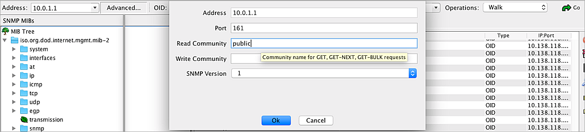

Deployment Overview
ServiceNav from Coservit is an IT service monitoring and reporting solution that delivers fast and accurate insight to support proactive management and preventative maintenance of the IT environment.
This document describes how to use ServiceNav to discover and monitor a WatchGuard Firebox through SNMP.
For information about SNMP OIDs and MIBs, see the Appendix.
Platform and Software
The hardware and software used to complete the steps outlined in this document include:
- Firebox with Fireware version 12.5.2B608341
- ServiceNav version 4.7.0
Before you integrate the ServiceNav device with the Firebox, configure the ServiceNav device to connect to Coservit ServiceNav cloud. For more information, see the ServiceNav documentation.
Test Topology
This diagram shows the test topology for this integration.

Set Up the Firebox
Before you can configure the ServiceNav device to discover the Firebox, you must configure SNMP settings on the Firebox and add an SNMP packet filter policy to allow SNMP polls.
- Log in to Fireware Web UI.
- Select System > SNMP.
- If necessary, click the lock
 to make changes.
to make changes. - From the Version drop-down list, select v3.
- In the User Name text box, type WatchGuard.
- From the Authentication Protocol drop-down list, select SHA1.
- In the Password and Confirm text boxes, type the authentication password.
- From the Privacy Protocol drop-down list, select DES.
- In the Password and Confirm text boxes, type the encryption password.

- Click Save.
- Select Firewall > Firewall Policies.
- Click Add Policy.
- From the Packet Filter drop-down list, select SNMP.

- Click Add Policy.
- Configure the SNMP packet filter policy to allow traffic from Any-Optional to Firebox.
If the ServiceNav box is connected to a trusted interface, specify Any-Trusted instead of Any-Optional.

- Use the default settings for all other options.
- Click Save.
The SNMP policy is added to the Policies list.

- If necessary, click the lock
 to prevent further changes.
to prevent further changes.
Set Up Coservit ServiceNav
Create a Monitoring Account
- Log in to Coservit ServiceNav cloud with your user credentials.
- Select Configuration > General > Monitoring accounts.
- Click +Add.
- From the Type drop-down list, select SNMP v3.
- In the User name text box, type WatchGuard.
- In the Password text box, type the password.
- In the Port (1 to 65535) text box, type 161.
- In the Authentication protocol (MD5, SHA) text box, type SHA.
- In the Encryption password text box, type the encryption password.
- In the Encryption protocole (DES, AES) text box, type DES.

- Click Apply.
Test the Integration
Get Device Information With Default Settings
- Select Configuration > Hosts > Discovery.
- Click Discover.
- In the Network discovery parameters section, in the IP addresses section, select List.
- In the text box, type the IP address of the optional or trusted Firebox interface to connect to. In this example, we specify the optional interface IP address.

- Click Apply.
The discovered Firebox appears in the list of devices.

- After the ping and snmp symbols are green, select the Firebox and click Add to monitoring..
- From the Category drop-down list, select Router.

- Click Apply.
- Select Configuration > General > Loading.
- Click Apply.

- Wait a few minutes, and then select Monitoring > Monitoring.
The IT Monitoring page shows the default services automatically created at discovery. The number of services for any host varies based on things such as the number of active network interfaces and the number of separate file systems.

- Click the services and scroll down
The default device information appears.

Get the Custom OID Values
Create a service template:
- Select Configuration > Services > Templates.
You can get the service template for SNMP v3 from Coservit support. - Select the template given to you by support and click Duplicate.
- Click the template you just duplicated.
- In the General information section, in the Name text box, type XTM Device Version.
- From the Business Impact drop-down list, select Medium.
- From the Category drop-down list, select Other.
- From the BI category drop-down list, select Other.
- In the Information on availability rate section, in the Availability rate text box, type 100.
- In the Check Properties section, from the Verification command drop-down list, select check_snmpv3_oid_wg.
You can get the command from support, in our example, the verification command is check_snmpv3_oid_wg. - In the OID text box, type 1.3.6.1.4.1.3097.6.3.1.0.
- In the Prefix text box, type version:.
- In the Warning threshold text box, type 3000.
- In the Temperature in Celsius degree text box, type 5000.
- In the Username for Datacore text box, type authPriv.
- In the User text box, type WatchGuard.
- In the Normal check interval text box, type 5.
- Use the default settings for all other options.


- Click Apply.
- Repeat steps 1-17 to create other templates with the OID you want to add.
Create a host template:
- Select Configuration > Hosts > Templates.
- Click +Add.
- In the General information section, in the Name text box, type WatchGuard_BOX.
- From the Categories drop-down list, select Other and Router.
- In the Relations section, from the Service templates drop-down list, select the service templates you just created.

- Click Apply.
Get the OID value:
- Select Configuration > Hosts > List.

- Click the host name.
- In the General information section, from the Template drop-down list, select WatchGuard_BOX.
- Use the default settings for all other options.

- Click Apply.
- Select Configuration > General > Loading.

- Click Apply.
- Wait for a few minutes, and then select Monitoring > Monitoring.

- Click the service and scroll down
The services you customized appear.

The Firebox might identify traffic from ServiceNav as a port scan attack. To avoid this, add the IP address of ServiceNav to the Blocked Sites Exceptions list on the Firebox.
To add a Blocked Site Exception to the Firebox:
- Log in to Fireware Web UI.
- Select Firewall > Blocked Sites > Blocked Sites Exceptions.
- Click Add.
- From the Choose Type drop-down list, select Host IPv4.
- In the text box, type the IP address of the ServiceNav device.
- Click OK.
- Click Save.
Appendix
About SNMP OIDs and MIBs
SNMP queries are typically formatted as a numeric expression. This is referred to as an Object Identifier (OID). An OID is a numeric reference to a unique object or piece of data.
A Management Information Base (MIB) is a database of OIDs that maps object names to a specific OID.
There are two types of MIBs: standard and enterprise. Standard MIBs are definitions of network and hardware events used by many different devices. Enterprise MIBs provide information about events that are specific to a single manufacturer.
The Firebox supports eight standard MIBs: IP-MIB, IF-MIB, TCP-MIB, UDP-MIB, SNMPv2-MIB, SNMPv2-SMI, RFC1213-MIB, and RFC1155 SMI-MIB.
For more information about Firebox Enterprise MIBs, see Enterprise MIB File Details.
Find OIDs
To get information through SNMP, you must know the OID of the object. An MIB browser is a good way to see the available MIB and OIDs. There are several free MIB browsers.
As an example, these steps describe how to use the iReasoning MIB browser:
- Install and open iReasoning.
- In the Address text box, type the IP address of your Firebox.
- Click Advanced.

- To read the MIB information for monitoring, in the Read Community text box, type public.
- From the SNMP Version drop-down list, select the SNMP version.
- From the Operations drop-down list, select Walk.
All Firebox MIBs appear in a list.